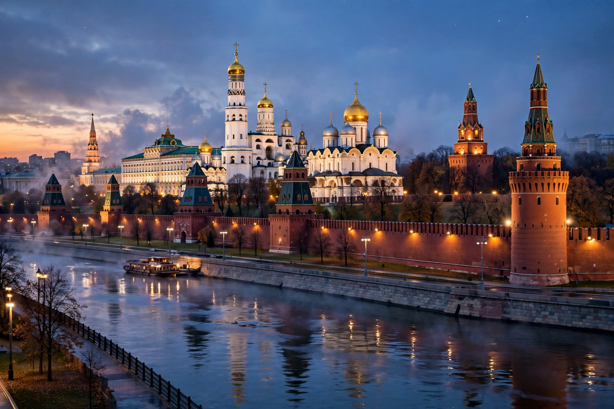

Moscow Kremlin
This article is about the Moscow citadel. For the government of Russia, see Kremlin.
| Moscow Kremlin | |
|---|---|
| Location | Moscow, Russia |
| Coordinates | 55.7517° N, 37.6178° E |
| Area | 27.5 ha (68 acres) |
| Built | 1485–1495 (present brick walls); site fortified from the 12th century |
| Governing body | Moscow Kremlin Museums; official residence of the President of Russia |
| UNESCO | World Heritage Site (1990, with Red Square) |

The Moscow Kremlin (Russian: Московский Кремль) is a fortified complex in the centre of Moscow, overlooking the Moskva River to the south, Saint Basil's Cathedral and Red Square to the east, and the Alexander Garden to the west. It is the best known of the Russian kremlins (citadels), includes five palaces and four cathedrals, and is enclosed by the Kremlin Wall with its 20 towers. The complex serves as the official residence of the President of Russia, and the word "Kremlin" is used metonymically for the Russian — and formerly Soviet — government.
History
The site was continuously inhabited from the 2nd century BC; the first wooden fortifications were raised by Yuri Dolgorukiy in 1156, and white-stone walls were built under Dmitry Donskoy in 1366–68. The present red-brick walls and towers were constructed between 1485 and 1495 by Italian master builders invited by Ivan III, including Pietro Antonio Solari and Marco Ruffo, and the cathedrals of Cathedral Square — the Dormition (1479), Annunciation and Archangel — were likewise designed by Italian architects such as Aristotele Fioravanti, giving the Kremlin its distinctive blend of Russian and Renaissance forms.
The Kremlin remained the seat of the tsars until Peter the Great moved the capital to Saint Petersburg in 1712. Napoleon occupied it briefly in 1812; the retreating French blew up parts of the wall and towers, later restored. The Soviet government returned to the Kremlin in 1918, its churches were closed and several demolished, and red stars replaced the imperial eagles on the towers in the 1930s. Since 1955 much of the complex has been open to the public as the Moscow Kremlin Museums.
Landmarks
Cathedral Square holds the Dormition Cathedral, coronation church of the tsars; the Archangel Cathedral, their burial place; the Annunciation Cathedral; the Church of the Deposition of the Robe; and the Ivan the Great Bell Tower, long Moscow's tallest structure. The Armoury Chamber preserves the imperial regalia, Fabergé eggs and state carriages; the Diamond Fund displays the crown jewels. The Grand Kremlin Palace (1838–1849) is the president's ceremonial residence, and the Senate building houses the presidential office. The Tsar Cannon and Tsar Bell — the largest bell in the world, never rung — stand within the walls.